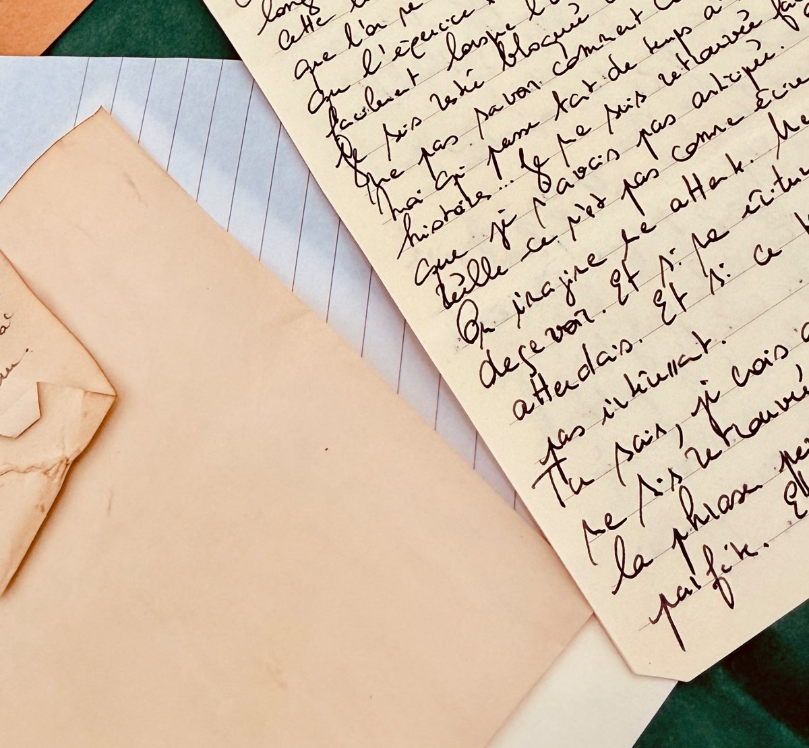

Le Club des lettres

De la magie dans ta boîte aux lettres, chaque mois.
Chaque mois, Caelan t'écrit. Jeune archiviste enfermé au sommet d'une tour des Terres de Cyan, il vit l'académie de Battlegrove de l'intérieur et partage avec toi ce qu'il en voit : la Forêt des Brumes Bleues, ses créatures, ses secrets. À travers ses yeux, tu découvres un monde magique, à la fois merveilleux et inquiétant.
Ses lettres sont accompagnées d'illustrations et de dessins. Parfois, il y glisse aussi une petite surprise, comme un sachet de décoction, autant de traces de son passage.
Chaque mois tu reçois :
- Une lettre de Caelan, écrite à la main
- Sa transcription tapuscrite, pour la lire facilement
- Une petite papeterie pour écrire, différente chaque mois
- Trois stickers des Terres de Cyan
Lettre n°1 : inscriptions jusqu'au 31 octobre, envoi dans la première quinzaine de novembre.
12 € par mois. Les frais de port (lettre sans suivi) en France et à La Réunion sont inclus dans le prix !
Les lettres partent de La Réunion au début de chaque mois. Tu peux t'abonner à n'importe quel moment jusqu'à la fin du mois pour recevoir la lettre du mois suivant.
Abonnement sans engagement, résiliable à tout moment.